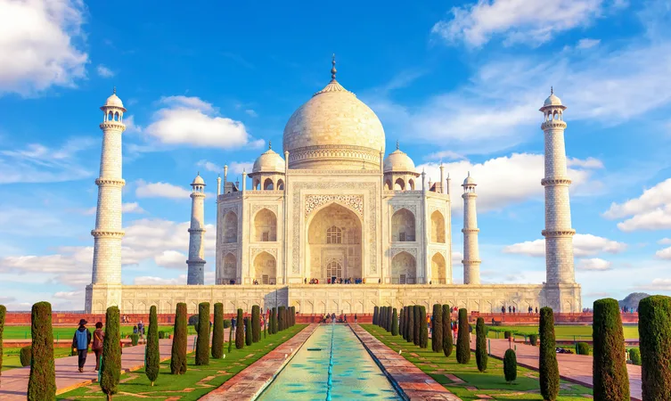

When it comes to the famous historical places in India, one cannot miss the Red Fort in Delhi. Also popularly known as the Lal Qila, the Red Fort was constructed during Shah Jahan’s reign in the 17th century.Constructed using huge red sandstone walls in the Mughal style of architecture, the highlights of the Red Fort include its beautiful geometric gardens, magnificent balconies and the opulent entertainment halls.
AGRA FORT
One of the oldest historical places in India is the Agra Fort, located in Uttar Pradesh. A true example of the stunning Mughal form of architecture, the 16th century Agra Fort was built during Akbar’s reign and has been recognized as a UNESCO World Heritage Site as well.

TAJ MAHAL
One of the most famous historical sites in India, the Taj Mahal of Agra dates back to the 17th century. It was built by Shah Jahan, the Mughal emperor, in the memory of Mumtaz Mahal, his third wife. It is also the abode of the tomb of Shah Jahan himself.The Taj Mahal has intricate carvings and is made entirely of white marble, on the southern banks of the Yamuna River. It is also one of the Seven Wonders of the World.
QUTUB MINAR
Delhi’s Qutub Minar ranks amongst the top 10 historical places in India. A UNESCO World Heritage Site, the Qutub Minar, also known as the Victory Tower, is the tallest brick minaret in the whole world, standing tall at a height of 72.5 metres. Built of marble and red sandstone, you can also see many beautiful carvings and intricate designs of the Qutub Minar.
HAWA MAHAL
Hawa Mahal in Jaipur is one of the best historical places in India, in addition to being a prominent landmark of Rajasthan. Dating back to the 18th century, Hawa Mahal is a 5-storey structure that overlooks the bustling streets of Jaipur. It has also been made in a blend of the Rajput, Mughal and Islamic styles of architecture.
INDIA GATE
Of all the famous historical places in India, India Gate possibly ranks at the top. An iconic landmark of Delhi, this sandstone-granite arch gate is amongst the largest war memorials in all of India, and is surrounded by verdant lawns and gardens.